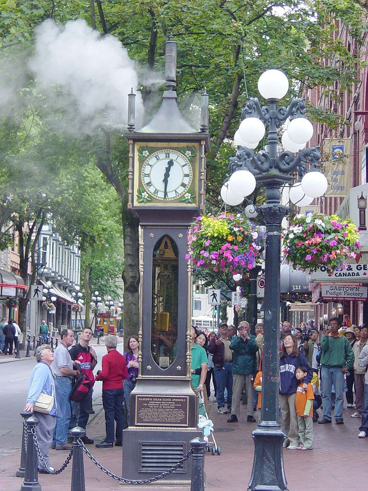
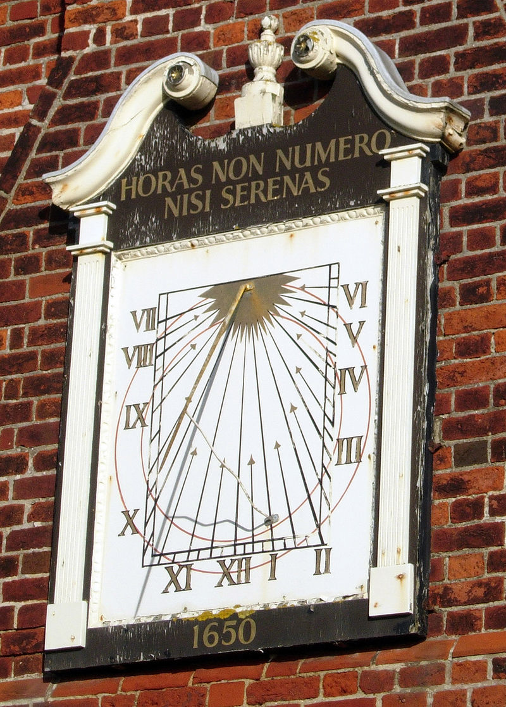

⚜ The Clockarium ⚜
The Time lives in clocks. The clocks live in the Clockarium!

Часы на Спасской башне — часы-куранты на Спасской башне Московского Кремля, одни из древнейших в мире. Первые часы установили в XV веке, в дальнейшем они неоднократно реставрировались и заменялись. Современные куранты появились в 1852 году и в настоящее время являются единственными полностью механическими. Ежегодно на фоне Спасской башни Президент России выступает с поздравительной речью, а звон колоколов объявляет о наступлении нового года. |
||
|

A steam clock is a clock which is fully or partially powered by a steam engine. Only a few functioning steam clocks exist, most designed and built by Canadian horologist Raymond Saunders for display in urban public spaces. Steam clocks built by Saunders are located in Otaru, Japan; Indianapolis, United States; and the Canadian cities of Vancouver, Whistler and Port Coquitlam, all in British Columbia. Steam clocks by other makers are installed in St Helier, Jersey and at the Chelsea Farmers' Market in London, England. |
||

Биг-Бен (англ. Big Ben) — популярное туристическое название часовой башни Вестминстерского дворца. Официальное название башни с 2011 года — Башня Елизаветы (англ. Elizabeth Tower). На данный момент часы Биг-Бена реставрируются до 2020 года. Изначально «Биг-Бен» являлось названием самого большого из шести колоколов, однако часто это название по ошибке относят и к часам, и к самой часовой башне в целом. На момент отливки Биг-Бен был самым большим и тяжёлым (13,7 тонны) колоколом Соединённого Королевства. В 1881 году уступил первенство колоколу Большой Пол (17 тонн). |
||

Башня Зиммера (нидерл. Zimmertoren, ранее также башня Корнелиуса Corneliustoren) — средневековая оборонительная башня в городе Лир (Бельгия), бывшая ранее частью городских укреплений. Башня была построена не позднее 1425 года (точная дата строительства неизвестна). В 1812 году башня была продана городским правлением, но после Первой мировой войны её вновь выкупили, чтобы снести. Однако... |
||
|

Солнечные часы — устройство для определения времени по изменению длины тени от гномона и её движению по циферблату. Появление этих часов связано с моментом, когда человек осознал взаимосвязь между длиной и положением солнечной тени от тех или иных предметов и положением Солнца на небе. |
||
Виды часов
⚜
Самые известные часы в мире
⚜
Самые удивительные часы
⚜
Часы своими руками
⚜
Produced by Yashin Grigory, 2019